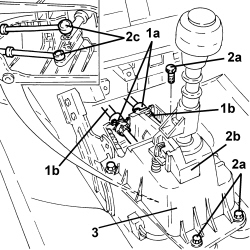

2125C32 GEAR CONTROL LEVER MOUNT - R R
- Path
- Procedures > 21 GEARBOX UNIT > 2125 MANUAL GEARBOX EXTERNAL CONTROLS - R.R. > 2125C MANUAL GEARBOX EXTERNAL CONTROL (CABLES) > 2125C32 GEAR CONTROL LEVER MOUNT - R R
- Kind
- repair procedure (removal / refitting; the operation number is the code)
- Applies to
- engines: 1.9 JTS, 2.2 JTS, 3.2 JTS, 1.9 JTD 8V, 1.9 JTD 16V, 2.4 JTD 20V; all production periods
- Interactive page
- https://sloeber94.github.io/elrnDB/alfa/159/en/#/939010742
Applies to: engines: 1.9 JTS, 2.2 JTS, 3.2 JTS, 1.9 JTD 8V, 1.9 JTD 16V, 2.4 JTD 20V; all production periods
 Removing
Removing
 Refitting
RefittingOp. 7045A10 FRONT SEAT (ONE), LEFT OR RIGHT - R.R.
Op. 7040L71 BOX ON TUNNEL REAR COATING - R R
Op. 5010C32 AIR VENT ON TUNNEL COVER FOR REAR SEATS - R.R.
Op. 7040L37 GEAR LEVER TRIM - R.R
Op. 3380A44 HANDBRAKE/LINKAGE PROTECTION - R+R
Op. 7040L20 TUNNEL COVER - R.R
Op. 7040A65 CONSOLE SIDE CLOSING (ONE) - R.R.
Op. 7040L74 TUNNEL TRIM SUPPORT BRACKET/MOUNT R R
1. Undo the clips (1a) to release the flexible gear selector and engagement rods (1b) from the gearbox manual control lever support.
2. Undo the bolts (2a) and lift up the gearbox manual control lever support (2b) as necessary and disconnect the flexible gear selector and engagement rods (2c).
3. Remove the gearbox manual control lever.

Applies to: engines: 1.9 JTS, 2.2 JTS, 3.2 JTS, 1.9 JTD 8V, 1.9 JTD 16V, 2.4 JTD 20V; all production periods
Refitting
Removing- Connect the flexible gear selection and engagement rods, place the manual gear control lever support in its housing and tighten the bolts to the recommended torque.
Component | Fastening | dia | Value (daNm) | Validity |
|---|---|---|---|---|
Gearbox manual control lever support | Bolt | M8 | (bodyshell side) 2.5 |
Op. 7040L74 TUNNEL TRIM SUPPORT BRACKET/MOUNT R R
Op. 7040A65 CONSOLE SIDE CLOSING (ONE) - R.R.
Op. 7040L20 TUNNEL COVER - R.R
Op. 3380A44 HANDBRAKE/LINKAGE PROTECTION - R+R
Op. 7040L37 GEAR LEVER TRIM - R.R
Op. 5010C32 AIR VENT ON TUNNEL COVER FOR REAR SEATS - R.R.
Topics linked from this page (8)
- 3380A44 HANDBRAKE/LINKAGE PROTECTION - R+R
- 5010C32 AIR VENT ON TUNNEL COVER FOR REAR SEATS - R.R.
- 7040A65 CONSOLE SIDE CLOSING (ONE) - R.R.
- 7040L20 TUNNEL COVER - R.R
- 7040L37 GEAR LEVER TRIM - R.R
- 7040L71 BOX ON TUNNEL REAR COATING - R R
- 7040L74 TUNNEL TRIM SUPPORT BRACKET/MOUNT R R
- 7045A10 FRONT SEAT (ONE), LEFT OR RIGHT - R.R.